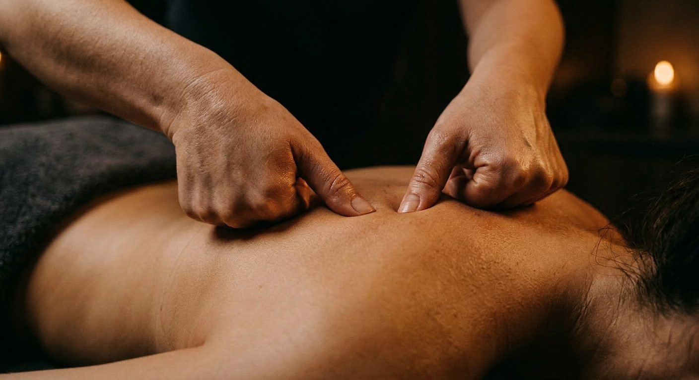

Where It Hurts Most.
Deep Tissue Massage in Salt Lake City
Where pressure meets purpose. Our licensed therapists apply slow, intentional strokes that reach beyond surface muscle to dismantle the chronic knots and structural tension that won't respond to anything else. This is not brute force. It is precision — applied with the knowledge of exactly where your body is holding, and exactly how to make it let go.

What Is Deep Tissue Massage?
Pressure That Actually Reaches the Problem
Deep tissue massage is a targeted therapeutic modality that works through the superficial muscle layer to address the underlying structures where chronic tension actually lives — the deeper muscle bellies, the myofascia that wraps and connects them, and the trigger points that refer pain across the body. The technique uses slow, deliberate strokes with sustained pressure applied using thumbs, knuckles, and forearms. Where Swedish massage is a wave, deep tissue is a current: less visible on the surface, far more powerful beneath it. This is the work that addresses the tension in your neck that's been there for two years. The knot in your shoulder that appeared during lockdown and never left. The lower back ache that follows you through every workday.
Understanding fascia is essential to understanding why deep tissue works. Fascia is the connective tissue web that surrounds every muscle, bone, and organ in your body. Under chronic stress, poor posture, or repetitive movement patterns, fascia thickens and contracts — creating restrictions that limit range of motion, compress nerves, and generate persistent pain signals. These fascial adhesions do not respond to rest or to gentle massage. They require the kind of sustained, directional pressure that deep tissue therapy delivers. Our therapists are trained specifically in structural assessment: they identify the source of your restriction, not just its symptom, and work methodically to dissolve it from the inside out.
Transparent Pricing
Specialist-Level Work. Accessible Rates.
Our therapists are trained in structural bodywork that rivals clinics charging two to three times our rates. Prices are approximate — confirm at booking.
Laser-focused work on a single problem area — a stubborn neck, a locked shoulder, a compressed lumbar. Maximum impact in minimum time.
Book This SessionThe complete treatment. Time to assess, map, and work through the primary tension zones with the depth and deliberateness deep tissue demands.
Book This SessionFor complex, full-body tension patterns. Your therapist has the time to address multiple problem areas thoroughly and close with proper integration work.
Book This Session* Prices are approximate estimates. Please confirm exact pricing when you book. Gift cards available — a gift that actually helps someone feel better.
Why It Works
Six Things Deep Tissue Does That Nothing Else Can
Surface-level approaches reach surface-level problems. For everything else — there is deep tissue.
Chronic Pain Relief
By reaching the structural tissue layers where chronic pain originates — the deep muscle bellies and the fascia that binds them — deep tissue massage addresses the root cause rather than masking the symptom. The relief is not temporary.
Breaks Down Adhesions
Scar tissue and fascial restrictions don't just cause pain — they alter movement patterns, compress nerves, and create downstream dysfunction throughout the body. Sustained deep tissue pressure mechanically breaks down these adhesions, restoring tissue quality and freedom of movement.
Postural Correction
Forward-head posture. Rounded shoulders.
Common Questions
Straight Answers About Deep Tissue
-
Deep tissue massage involves deliberate, sustained pressure into deeper muscle layers, and it is common to feel intensity — particularly in areas of chronic tension. This is distinct from sharp or alarming pain. Our therapists use the phrase "good hurt" to describe the productive discomfort of releasing long-held tissue. You are always in control: pressure is adjusted throughout the session based on your feedback, and no technique is pushed past your tolerance. Mild soreness 24–48 hours after the session is normal and signals that the tissue is responding. Staying well hydrated before and after helps significantly.
-
Swedish massage uses broad, flowing strokes on superficial muscle layers to promote relaxation and circulation. Deep tissue massage uses slower, more targeted strokes and sustained pressure to reach the deeper layers of muscle and the connective tissue (fascia) surrounding them. Swedish is the right choice for stress relief and general wellbeing; deep tissue is the right tool when you have specific chronic pain, structural tension, scar tissue, or postural dysfunction that hasn't responded to gentler approaches. Many clients benefit from both, used strategically.
-
Many clients notice meaningful improvement after a single session, particularly in acute tension areas. For chronic pain patterns that have developed over months or years, a series of four to six sessions is typically recommended — ideally spaced one to two weeks apart. This allows the tissue to integrate between sessions and enables your therapist to work progressively deeper as the musculature releases. Your therapist will assess your specific situation and give you an honest timeline at your first appointment.
-
Deep tissue massage is effective for a wide range of conditions: chronic neck and back pain, tension headaches and migraines, repetitive strain injuries, IT band syndrome, rotator cuff issues, postural dysfunction, piriformis syndrome, plantar fasciitis, and recovery from soft tissue injuries. It is also highly effective for the physical toll of sedentary work — forward-head posture, rounded shoulders, and compressed lumbar tissue that accumulate from hours at a desk. When in doubt, consult your therapist — we'll tell you honestly whether deep tissue is appropriate for your situation.
Chronic Pain Is a Choice You Can Stop Making.
Our therapists specialize in what other studios can't reach. Same-day appointments frequently available. The tension has had long enough — it's time to deal with it.
The Gift That
Actually Gets Used.
No re-gifting. No regrets. A J Massage SLC gift card is the most thoughtful thing you can give — and the most eagerly redeemed. Delivered instantly by email. Never expires.
Choose an Amount
Redeemable for any service or add-on. No expiration date. Email delivery in minutes.